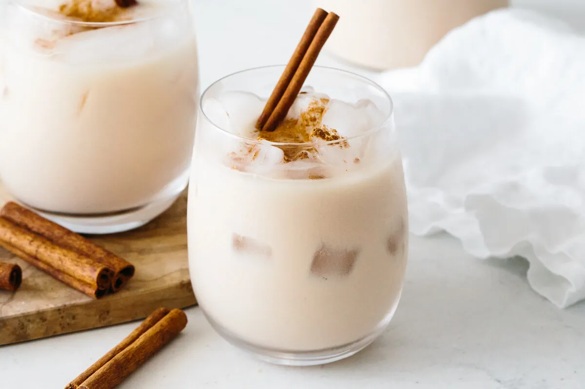

Horchata

Horchata
Horchata is a creamy chilled drink made from rice with cinnamon. There are many
other optional add-ins. Some variations are nuts, vanilla, fruit, other spices.
Flowers can be added such as hibiscus or mexican marigolds.
Ingredients
Directions
- Boil water, spices, and optional ingredients if you are using.
- Use the hot water to soak the rice for 24 hours, more or less.
- Blend in the blender.
- Strain through a cloth or mesh.
- refrigerate or chill over ice and enjoy.